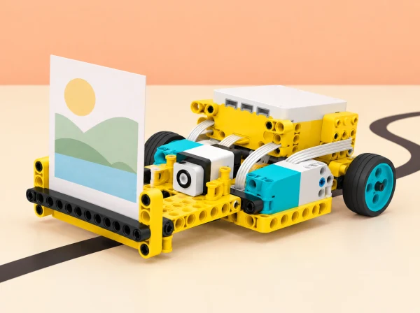

Adaptació de la unitat Invention Squad per al context d’un centre educatiu valencià. Cada sessió conserva l’objectiu oficial i el tradueix en un repte, materials i criteris propis; quan una activitat del pla és híbrida o no requereix el hub, s’indica expressament en la sessió.
En lloc de l’escena oficial d’un gos amb un problema, fem servir un model SPIKE Prime construït amb forma pròpia d’animal de l’aiguamoll. El sensor de color activa una seqüència de tres sons —un per cada fitxa de color— i cada parella descriu què creu que li passa al personatge; poden aparéixer hipòtesis diferents a partir dels mateixos senyals. Compareu les llistes entre equips i redacteu un problema concret separant observació, interpretació i solució. Acordeu criteris d’èxit i restriccions per a una resposta útil (per exemple, tres senyals identificables, volum adequat i cap dada personal). Després, cada equip crea una seqüència sonora pròpia per a una altra parella, que ha de definir el problema sense rebre la solució. Si una interpretació és massa evident, canvieu un so o l’ordre; com a ampliació, passeu del problema definit a una primera solució i proveu-la amb els criteris. Evidència: seqüència de tres colors/sons, diverses hipòtesis comparades, enunciat del problema i criteris de disseny. No atribuïm els sons a animals reals: són codis de ficció per a parlar d’observacions i necessitats.
En parelles, munteu una base saltadora o caminadora SPIKE Prime i programeu-la perquè repetisca el moviment inicial. Dissenyeu més d’un joc de potes articulades que empenyen el cos endavant; les rodes no poden fer de locomoció. Abans de competir, definiu el criteri «arribar de la línia d’eixida a la meta amb rapidesa i sense bolcar» i proveu cada prototip durant cinc minuts: tres recorreguts en una mateixa superfície, longitud de pota o gambada i velocitat motoritzada anotades. Compareu temps i regularitat, compartiu els prototips prometedors i feu una cursa final; després afegiu unes poques peces soltes al carril per canviar la superfície i discutiu com canvia la prova. Per a l’ampliació matemàtica, calculeu velocitat mitjana en cm/s i prediu la distància després de 8, 16 i 24 segons; en llengua i medi, relacioneu el moviment amb un animal sense afirmar que la maqueta el copia fidelment. Un repte addicional és superar el model de demostració del docent. Evidència: esbossos de diverses solucions —incloses les que no funcionen—, taula de proves comparables, predicció revisada i justificació del disseny triat.
Construïu en tàndem un controlador manual i dos agafadors diferents: un de pinça flexible per a objectes lleugers i flexibles, un altre de boca partida que puga subjectar peces més grans i pesants. Proveu-los amb dues comparacions justes, anotant resultats en una taula: (1) objectes de mida diferent i pes semblant; (2) objectes de mida semblant i pes diferent. Manteniu constants el punt de partida, l’operador, el temps i el nombre d’intents; primer feu una prova modelada i després recolliu tres mostres pròpies de l’aula, sempre grans i lleugeres, sense vidre ni objectes personals. Predigueu quin agafador funcionarà millor amb cada peça, comproveu-ho, i expliqueu l’efecte de la mida i la massa: no hi ha un disseny «millor» per a tots els objectes. Si cal reduir dificultat, proveu només una peça gran i una de menuda; com a extensió, definiu criteris propis i redissenyeu un agafador abans de repetir els tests. Evidència: taula amb dos factors separats, predicció, resultats, conclusió basada en les dades i retorn oral sobre avantatges i límits. Els materials són mostres de l’exposició, no residus reals ni càrregues que exigisquen acostar les mans a la pinça.
Prepareu una traçadora XY de taula per al plànol d’una exposició, amb el programa i el paper dissenyats pel docent; el model començarà deliberadament amb errors i no s’ha d’engegar fins que l’equip haja llegit o explicat cada pas del codi. Repartiu la construcció en parella (bastidor superior i mecanismes / base, carro del llapis i alimentació del paper) i inspeccioneu quatre símptomes segurs: una roda d’alimentació absent que fa fallar l’eix Y, la part superior mal fixada, els engranatges d’alimentació invertits que avancen massa ràpid i el carro del llapis fluix que distorsiona l’eix X. L’objectiu és trobar causes arrel, no rebre la llista per endavant: per a cada símptoma anoteu què no funciona, què hauria de passar i una reparació proposada; modifiqueu el mecanisme o codi d’un en un, proveu sobre paper amb una figura de referència i documenteu el canvi. Compartiu les solucions i repetiu el cicle amb una millora pròpia. Atureu el motor abans de tocar engranatges, no forceu eixos i feu servir velocitat baixa. Evidència: pseudocodi previ, taula d’error–causa–prova–reparació i dibuix inicial/final que mostre si les coordenades X/Y s’han corregit. El dispositiu i les figures són una adaptació pròpia, no una còpia de la màquina ni dels plans de LEGO.
Adapteu el procés de disseny de pròtesis a una eina escolar que amplie una funció triada per una persona —per exemple, subjectar una targeta gran, agafar fruita o girar una maneta de maqueta— sense simular discapacitats ni diagnosticar ningú. Presenteu el repte i les restriccions abans de construir; cada parella genera diverses idees i n’escull dues per provar. Dediqueu una sessió a conversar sobre la tasca i dibuixar alternatives, una altra a construir i provar totes dues amb la mateixa càrrega/protocol i registrar dades en una taula pròpia, i una tercera a revisar i presentar els resultats. Si hi ha una persona col·laboradora, la consulta és voluntària, consentida i pot canviar els criteris o retirar-se; doneu-li oportunitat d’avaluar si la proposta li és útil. Si no n’hi ha, feu una tasca de ficció i deixeu explícita la validació pendent. Un exemple comú pot ajudar qui ho necessite; un repte avançat pot incorporar assessorament professional o peces tallades/impreses només si el centre ja les té. Evidència: quadern d’inventor amb elements del problema, esbossos, dues opcions construïdes, dades de prova, canvi d’iteració, retorn i explicació pública. No es fabriquen pròtesis mèdiques ni es recomana l’ús fora de l’aula.
Comenceu parlant d’invents que resolen una necessitat quotidiana i descriviu un espai de treball de la classe: què s’hi fa i què el faria més útil? Cada alumne dissenya de manera individual un prototip senzill que ajude a preparar la taula de l’exposició (mantindre dreta una targeta, separar peces o ordenar etiquetes). Amb una seqüència breu de 10 minuts per idear, 15 per construir, 10 per provar i 10 per explicar/revisar, feu servir el cicle de disseny dues o tres vegades si és possible: construir, mesurar com funciona, escoltar una parella i millorar. No hi ha instruccions ni model final obligatori; accepteu diversos estils. La prova consisteix en la mateixa tasca abans i després de l’ajust i es documenta amb esbós o taula. Aquesta lliçó és híbrida: podeu emprar peces soltes, altres peces LEGO, cartró o materials trobats; no requereix SPIKE Prime, BricQ ni cap hub, i una idea motoritzada és només una ampliació futura, no un prototip construït. Evidència: necessitat observada, criteri acordat, prototip inicial i revisat, mesura simple i explicació del canvi.
SPIKE Prime i els seus motors per a les cinc lliçons del set, taula estable, targetes de paper, peces soltes, cartó i materials lleugers per a l’activitat híbrida final. La darrera sessió es pot fer sense cap set de robòtica; cap part no pressuposa BricQ Motion.
Carpeta d’equip: problema definit amb observacions, criteris i restriccions; dos prototips de locomoció amb tres registres per prova; taula comparativa de pinces; registre de depuració; fitxa de disseny col·laboratiu amb retorn de la persona usuària o constància que falta validar-lo; i esbós/prova d’ús de l’ajudant d’escriptori. La rúbrica observa si l’alumnat diferencia problema i solució, compara evidències amb els criteris, documenta una iteració i comunica una limitació. No es puntua si el robot «guanya» ni s’aprova un prototip per a ús real.
La participació de persones amb necessitats d’accessibilitat és voluntària i informada; no simulem una discapacitat amb venda o guants. Si no hi ha una persona consultora, analitzem barreres del context amb fonts fiables i marquem la validació com a pendent. Repartim rols de disseny, programació, prova i documentació.
La seqüència adapta les sis entrades de la unitat LEGO Education Invention Squad: Help!, Hopper Race, Super Cleanup, Broken, Design for Someone i Design for You. Les cinc primeres especifiquen el set SPIKE Prime; la sisena és híbrida i permet peces LEGO corrents o materials reutilitzats, sense necessitat de cap hub. El context, els guions, les dades, el camp de proves, les activitats i la imatge són propis. Els muntatges i sensors es comproven amb el set disponible al centre.